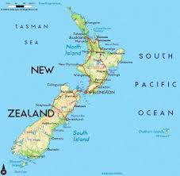

Parma Wallaby - Macropus parma
Basic Information
The parma wallaby is a part of the Animalia Kingdom and can be found in New South Wales and Kawau Island, New Zealand. They are most likely found in wet areas. As most can tell because of it's looks, it is related to a species of Kangaroo. The parma wallaby is typically 100cm and weighs around 2.6 - 5.9kg. Short brown fur is found on its back, short greyish hair found on it's head, and white fur on the underparts of the animal. The parma wallaby traditionally lives a secretive lifestyle and stays undercover during the day and feeds at night. The parma wallaby is herbivorous. The parma wallaby can live anywhere from 6-8 years in the wild to 11-15 years in captivity.
Are they endangered?
According to IUCN (International Union for Conservation of Nature) says that the parma wallaby is near threatened. The most recent estimate of the parma wallaby in the wild is around 1,000 - 10,000 adults (1992). The most recent estimate of the parma wallaby in captivity is around 116 in North America (2010). Parma Wallabies can only breed and reproduce during the months of March and July, this only produces one offspring per mating season. Now that we know that the parma wallaby is endangered there is only one question left: what do we do to help? The office of Environment and Heritage is working now to help save and protect the parma wallaby. their movement includes efforts of researching their habitats and encourage landowners to help and push for a protective, suitable habitat.
Fast facts!
- Location: New South Wales and Kawau Island, New Zealand
- Habitat: Rainforests
- Diet: Herbivorous
- Behavior: Active at night
- Life Style: Secretive
- Population in Wild: 1,000 - 10,000 adults
- Population in Captivity: 116 adults